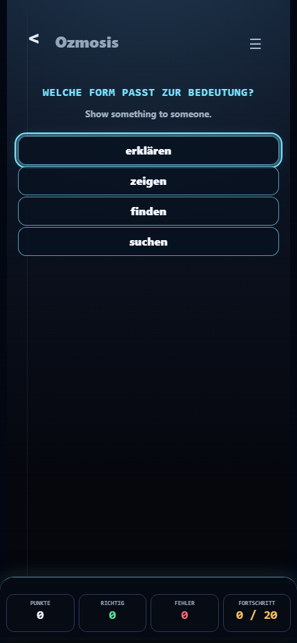
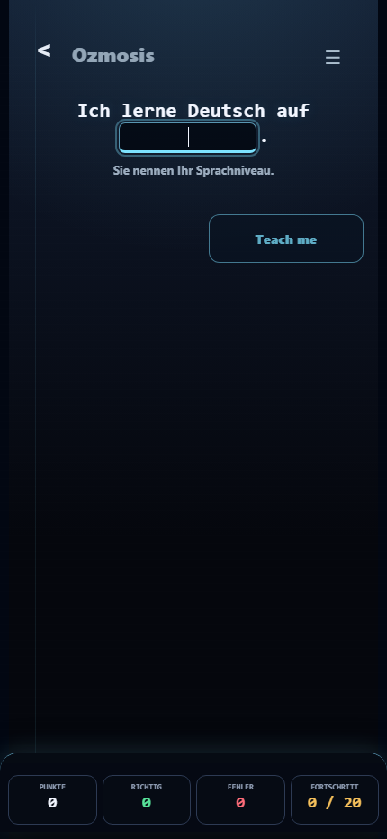
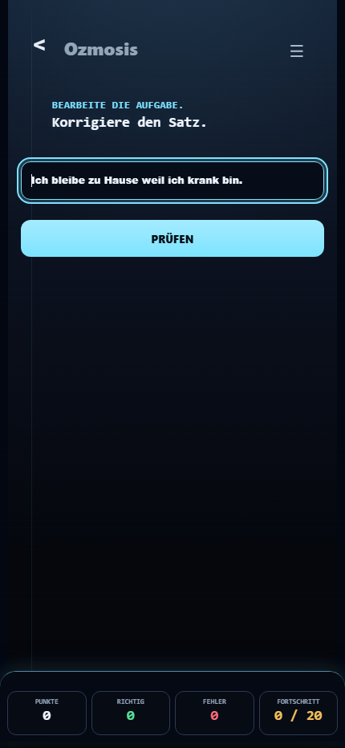
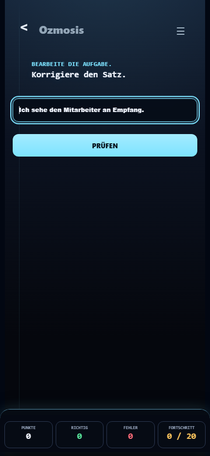
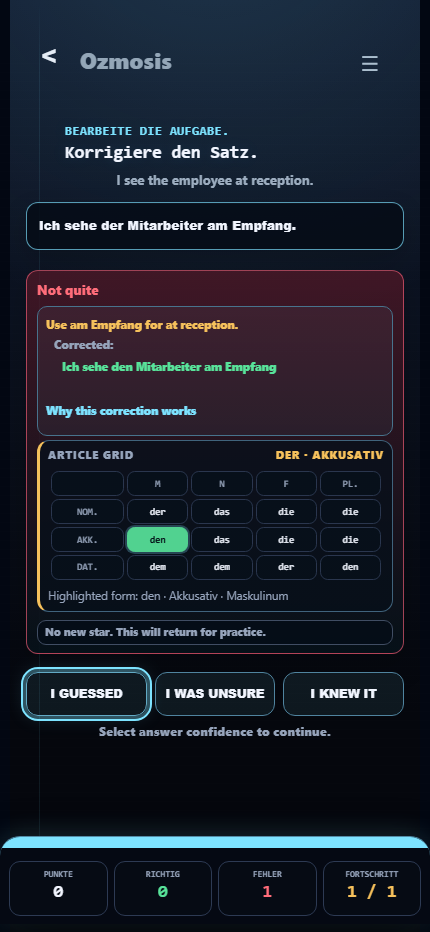
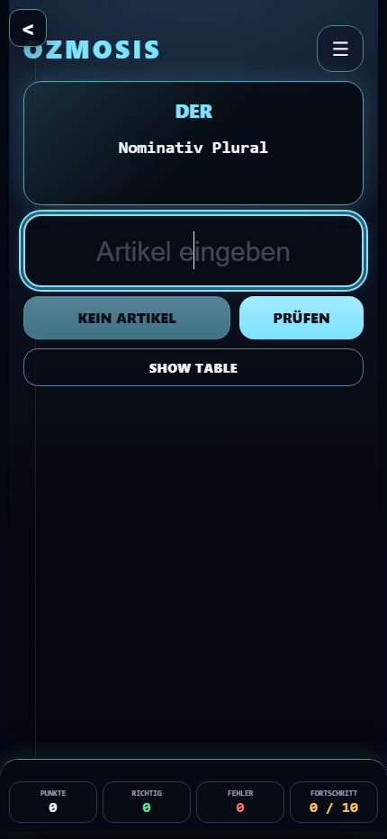
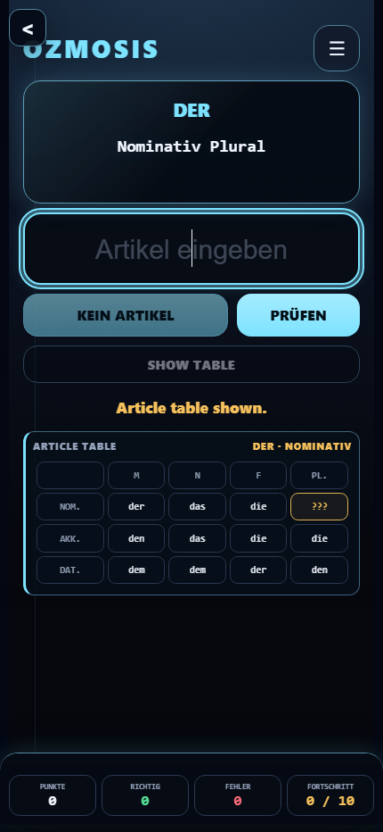
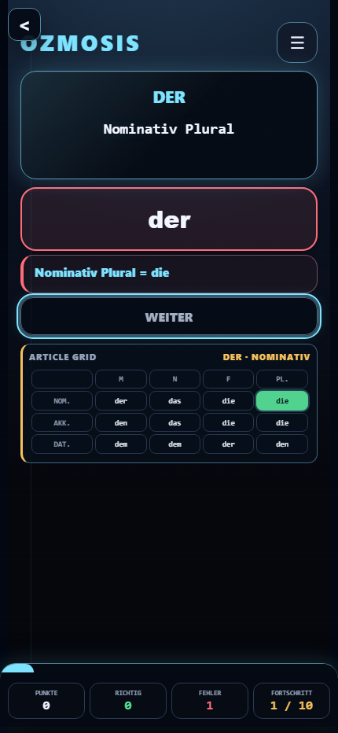
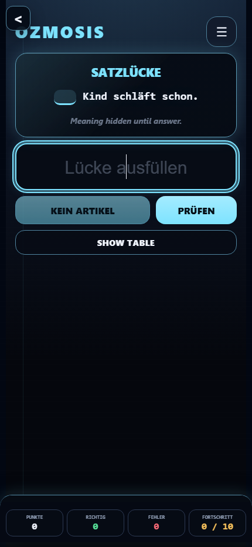

Ozmosis v0.85.3.5 Shared Practice Frame Convergence

b1-choice-current

b1-cloze-current

b1-correction-current

b1-cases-articles-repair-without-grid-or-with-grid

b1-cases-articles-repair-wrong-with-compact-grid
 article-grid-compact-feedback
article-grid-compact-feedback

case-trainer-table-active
case-trainer-full-grid-reveal

article-grid-optional-reveal

case-trainer-wrong-answer-grid

case-trainer-typed-answer